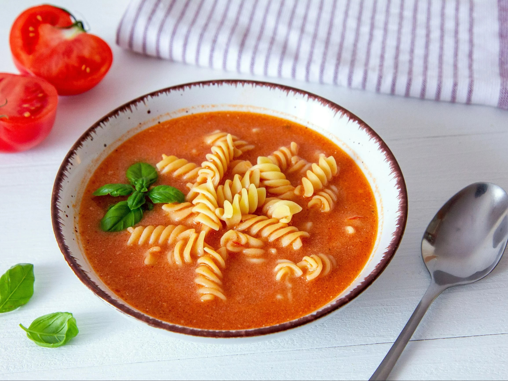

Najnowsze Przepisy
Najnowsze Przepisy

Spaghetti Bolognese
Kategoria: Dania główne
| Składnik | Ilość |
|---|---|
| Makaron spaghetti | 500g |
| Mięso mielone wołowe | 500g |
| Pomidorowe passata | 400g |
| Cebula | 1 sztuka |
| Czosnek | 2 ząbki |
| Oliwa z oliwek | 2 łyżki |
| Przyprawy (bazylia, oregano, sól, pieprz) | do smaku |

Sałatka Cezar
Kategoria: Sałatki
| Składnik | Ilość |
|---|---|
| Sałata rzymska | 1 główka |
| Kurczak grillowany | 200g |
| Grzanki | 100g |
| Parmezan | 50g |
| Sos Cezar | 3 łyżki |


Kurczak tikka masala
Kategoria: Dania główne
| Składnik | Ilość |
|---|---|
| Kurczak | 500g |
| Jogurt naturalny | 150g |
| Pasta tikka masala | 2 łyżki |
| Śmietana 30% | 100g |
| Przyprawy (curry, kumin, kolendra) | do smaku |

Zupa pomidorowa
Kategoria: Zupy
| Składnik | Ilość |
|---|---|
| Pomidory w puszce | 400g |
| Cebula | 1 sztuka |
| Czosnek | 2 ząbki |
| Rosół lub bulion warzywny | 500ml |
| Przyprawy (bazylia, sól, pieprz) | do smaku |

Pierogi ruskie
Kategoria: Dania główne
| Składnik | Ilość |
|---|---|
| Ciasto na pierogi | 500g |
| Twarożek | 300g |
| Ziemniaki | 300g |
| Cebula | 1 sztuka |
| Masło | 50g |

Tiramisu
Kategoria: Desery
| Składnik | Ilość |
|---|---|
| Mascarpone | 500g |
| Jajka | 4 sztuki |
| Cukier | 100g |
| Biszkopty | 200g |
| Kawa | 150ml |

Barszcz czerwony
Kategoria: Zupy
| Składnik | Ilość |
|---|---|
| Buraki | 500g |
| Cebula | 1 sztuka |
| Woda | 1.5l |
| Czosnek | 2 ząbki |
| Ocet | 2 łyżki |

Omlet francuski
Kategoria: Śniadania
| Składnik | Ilość |
|---|---|
| Jajka | 4 sztuki |
| Masło | 20g |
| Sól i pieprz | do smaku |
| Śmietana 30% | 2 łyżki |

Gulasz węgierski
Kategoria: Dania główne
| Składnik | Ilość |
|---|---|
| Mięso wołowe | 500g |
| Cebula | 1 sztuka |
| Papryka | 2 sztuki |
| Pomidory | 200g |
| Przyprawy (papryka słodka, kminek, czosnek) | do smaku |

Krem z dyni
Kategoria: Zupy
| Składnik | Ilość |
|---|---|
| Dyni | 500g |
| Cebula | 1 sztuka |
| Bulion warzywny | 750ml |
| Przyprawy (imbir, gałka muszkatołowa) | do smaku |

Sernik nowojorski
Kategoria: Desery
| Składnik | Ilość |
|---|---|
| Twarożek | 500g |
| Biszkopty | 200g |
| Cukier | 150g |
| Masło | 100g |
| Jajka | 3 sztuki |